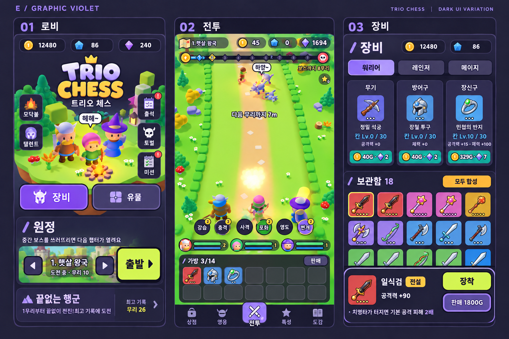

01 / LOBBY
파티를 확인하고, 원정으로.
출발 → 파티 준비 → 보조 활동
모드는 하나의 선택기로, 출발은 하나의 주 행동으로. 출석·미션·모닥불·토벌은 활동에 모았습니다.
선택한 톤은 유지하고, 행동의 순서는 다시 설계합니다
클릭 가능한 360 × 640 UI 시안
예시 상태 · 실제 저장 데이터 연결 없음
콘텐츠 위계·이론·검증 과업 읽기 ↗
모드는 하나의 선택기로, 출발은 하나의 주 행동으로. 출석·미션·모닥불·토벌은 활동에 모았습니다.
얇은 상태줄은 유지합니다. 가방은 펼쳐서 확인하고, 자동 스킬은 누르는 버튼처럼 보이지 않게 했습니다.
장비 교체와 슬롯 강화를 구분합니다. 현재값을 기억할 필요 없이 바뀌는 수치와 비용을 가까이 보여 줍니다.
라임은 그 상태의 주 행동, 라일락은 선택과 탐색입니다. 받을 보상이 있을 때만 활동 배지를 표시합니다.
가방 점유·스킬북 수는 남기고, 전체 목록과 긴 설명을 한 단계 패널로 펼칩니다.
영웅과 스킬, 장비와 비교 결과, 강화와 비용을 같은 맥락에 배치했습니다.
